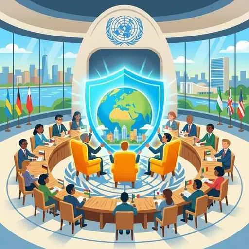

15. 国際社会と国際連合
私たちが暮らす日本は、地球上の多くの国々と繋がり合って生きています。この国境を越えた国々の集まりを「国際社会」と呼びます。国際社会には、世界政府のような強力な警察組織がないため、国同士の争いを防ぐルールや、話し合いの場が極めて重要です。今回は、国際社会の基本構造と、世界の平和を守る中心機関「国際連合」の仕組みについて詳しく学びます！
1. 国際社会の主役「主権国家（しゅけんこっか）」と国際法
国際社会は、他国からの干渉を受けずに自国の政治を決定する権利を持つ独立国、すなわち主権国家が集まってできています。
① 国家の三要素（こっかのさんようそ）─絶対暗記！
ある集団が独立した「国家」として認められるためには、以下の３つの要素がすべて揃っていなければなりません。
- 領域（りょういき）：国家の支配が及ぶ空間。領土・領海・領空の３つからなります。
- 国民（こくみん）：その国に属し、生活している人々。
- 主権（しゅけん）：国の政治のあり方を最終的に決定する最高・独立の権利。
② 国際法（こくさいほう）
国際社会に世界共通の警察はありませんが、国同士が守るべきルールがあります。これが国際法です。
- 条約（じょうやく）：国家間で結ばれる、文字で書かれた文書による約束（日米安全保障条約や地球温暖化防止の京都議定書など）。
- 国際慣習法（こくさいかんしゅうほう）：長年の国家間の慣習が、明文化されずにそのままルールとして定着したもの（公海自由の原則など）。
2. 国際連合（UN）の組織と「拒否権」の仕組み
国際連合（国連）は、第二次世界大戦の悲惨な経験をもとに、1945年10月に設立されました。本部はアメリカのニューヨークにあります。国連にはテストで非常によく出る「２大組織」があります。
① 総会（そうかい）
すべての加盟国（約190カ国以上）で構成される国連の最高機関。国全体の大きさに関わらず、すべての国が「1国1票」の平等な投票権を持ちます。※ただし、総会の決議には各国家を強制する「法的拘束力」はありません。
② 安全保障理事会（あんぜんほしょうりじかい・安保理）
世界の平和と安全を守るために直接の責任を持つ機関。安保理の決議には、加盟国を縛る強い法的拘束力があります。
- 常任（じょうにん）理事国（5カ国）：戦勝国であるアメリカ、イギリス、フランス、ロシア、中国。任期はなく固定されています。
- 非常任理事国（10カ国）：任期2年で、総会で選ばれます。
- 大国一致の原則と拒否権（きょひけん）：重大な決定には、常任理事国5カ国すべてを含む9カ国以上の賛成が必要です。常任理事国のうち1カ国でも反対（拒否権を行使）すると、他のすべての理事が賛成していても決議は不成立（廃案）となります。

図1：安保理の常任理事国が拒否権を行使することで、時に迅速な停戦決議などが阻まれる課題があります
3. 平和維持活動（PKO）と非政府組織（NGO）
① 国連平和維持活動（PKO）
国連が主導し、紛争が起きた地域で停戦の監視や地雷の撤去、選挙の支援などを行う活動。日本も1992年に「PKO協力法」を制定し、自衛隊などを派遣して国際平和に貢献しています。
② 非政府組織（NGO）
国連などの政府機関（政府間組織）とは異なり、一般の市民が自発的につくり、国境を越えて人道支援や環境保護、医療活動などを行う民間組織を非政府組織（NGO）と呼びます（例：国境なき医師団、赤十字など）。機敏で地域に密着した活動ができるため、国際社会で非常に重要な役割を果たしています。
🔥 この単元のテスト対策・暗記のコツ
-
★
常任理事国の拒否権がもたらす問題（記述！）：
・記述：「安全保障理事会の拒否権制度には、どのような問題点があるか、説明しなさい。」
・解答：「常任理事国のいずれか1カ国でも反対すれば決議が成立しないため、大国同士が対立した際に安保理が機能不全に陥り、紛争解決が遅れる問題。」 -
★
国家の三要素の書き出し：
・「領域（領土・領海・領空）」「国民」「主権」の3つ。領域の範囲として「領海」や「領空（領土と領海の上空）」の言葉の書き取りも狙われます。 -
★
常任理事国5カ国の暗記：
・アメリカ、イギリス、フランス、ロシア、中国。第二次世界大戦の戦勝国（連合国）の主要国です。日本やドイツは入っていません。